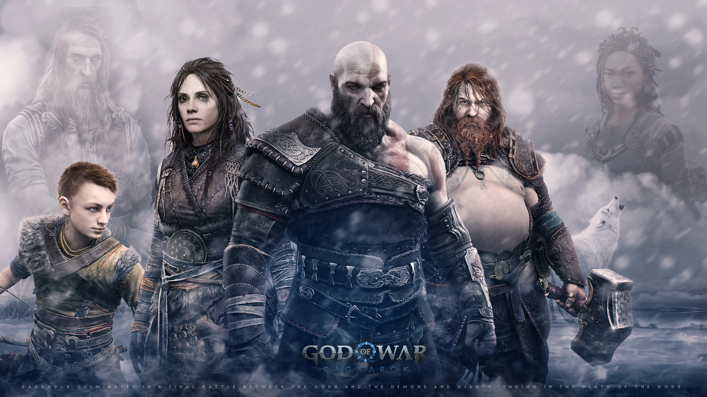

God of War Ragnarok
God of War è una serie di videogiochi action-adventure sviluppati da Santa Monica Studio e pubblicati da Sony Interactive Entertainment a partire dal 2005.
Al 2024 la serie conta cinque capitoli principali (God of War, God of War II, God of War III, God of War e God of War Ragnarök) e quattro prequel (God of War: Ascension, God of War: Betrayal, God of War: Chains of Olympus, e God of War: Ghost of Sparta).



STORIA
La storia riprende con Kratos e suo figlio Atreus mentre affrontano le conseguenze della rivelazione dell’identità divina di Atreus (Loki) e l’arrivo del Fimbulwinter, che preannuncia il Ragnarök. I due cercano risposte sul destino e sulla profezia che sembra condannare Kratos alla morte. Nel frattempo, devono affrontare divinità norrene come Thor e Odino, determinati a impedire il compimento del Ragnarök. Il legame tra padre e figlio è al centro della narrazione, evolvendosi tra conflitti e collaborazione. Atreus vuole scoprire la verità sulla sua identità, mentre Kratos cerca di rompere il ciclo della violenza. Il gioco culmina nella battaglia finale tra gli dei, con eventi epici e scelte decisive. Alla fine, Kratos trova una nuova speranza come guida e protettore.God of War Ragnarök è acclamato per la sua narrazione emotiva, il gameplay profondo e la ricchezza del suo universo mitologico.
pagina iniziale